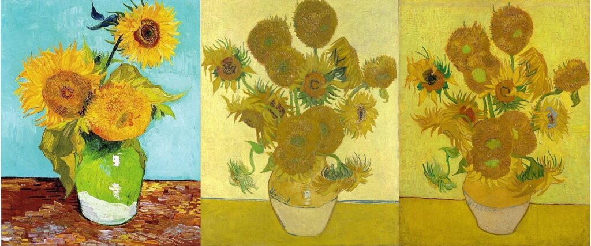
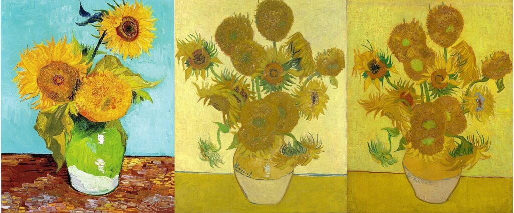

Nuestros Servicios
Servicio 1
Flores de almendro (1888-1890)
En pocas palabras, Van Gogh Flores de almendro son hermosas. El tema es estéticamente agradable y la alegría del artista al pintarlos se puede ver claramente en el resultado. Esta pintura en particular es la más famosa de toda una serie dedicada a los almendros en flor.
Ver másServicio 2
Iris (1889)
La pintura está llena de luz, vida y belleza natural, con un toque de inspiración japonesa, como se encuentra en Flores de almendro. En pocas palabras, es espectacular a la vista y está lleno de color. “[Esto] golpea el ojo desde lejos. Los Iris son un hermoso estudio lleno de aire y vida ". -Van Gogh.
Ver más 

Servicio 3
Van Gogh pintó varias representaciones de los campos de trigo que lo rodeaban.
En 1888, Van Gogh escribió: “Estoy pintando con el gusto de un marsellés comiendo bullabesa, que no te sorprenderá cuando se trata de pintar grandes girasoles”.
Ver más